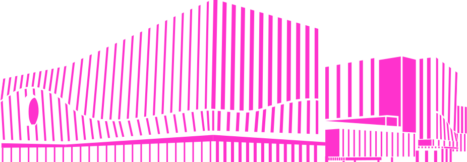
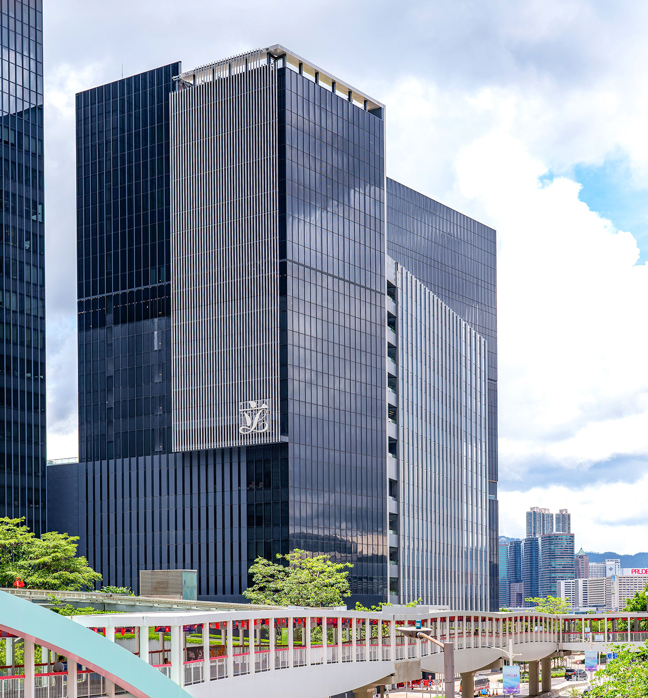
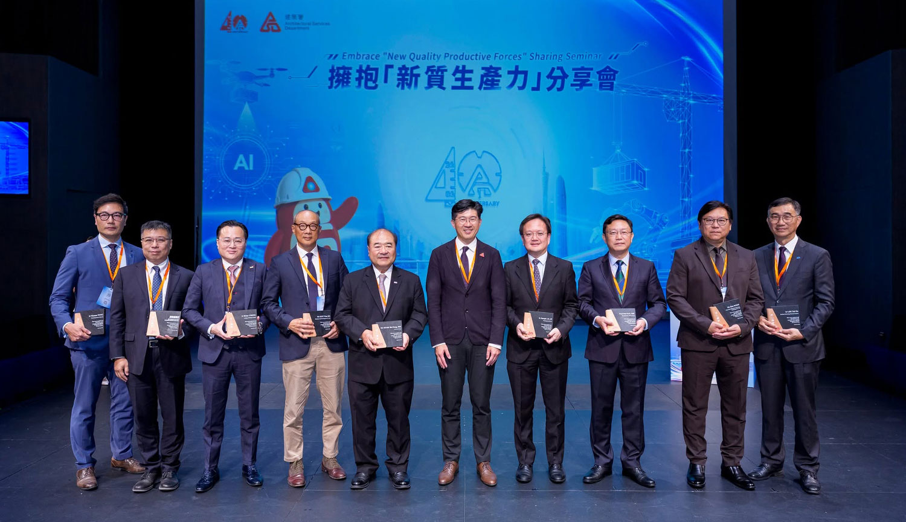
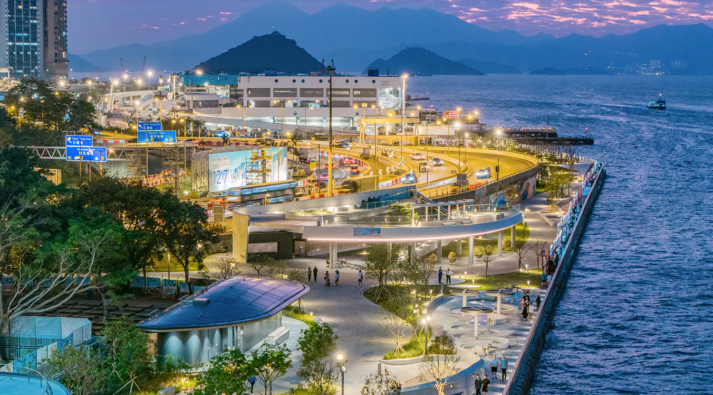
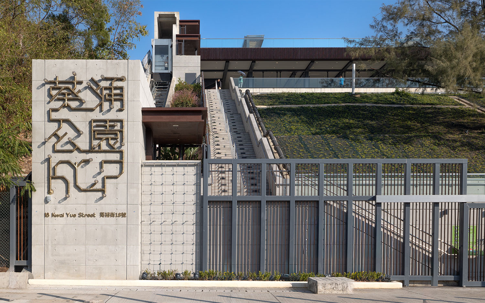
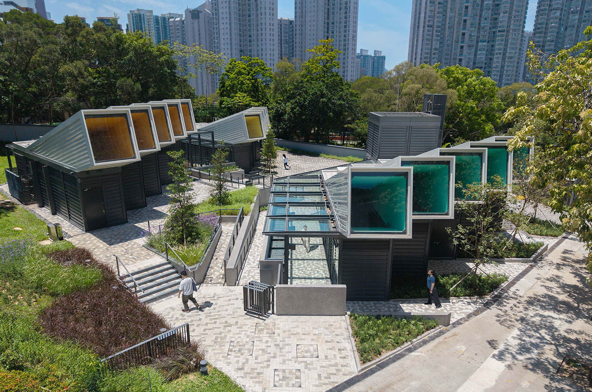
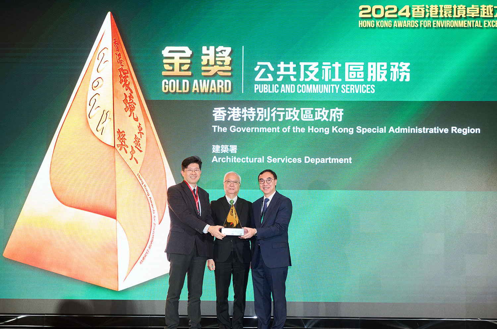

Message from the Director
Message from the Director


Message from the Director
For four decades, ArchSD has upheld the spirit of professional excellence, embracing innovation and dedication to create public architecture with warmth and vitality. We remain committed to turning community’s aspirations for a better and more fulfilling life into reality.
Michael LI, JP
Director of Architectural
Services

A Forty-year Journey in Crafting Excellence and Forging Dreams
This year marks ArchSD’s 40th anniversary, a significant milestone for reflecting on our achievements, building on our legacy and embarking on a new chapter for the future. Our anniversary theme “Crafting Excellence, Forging Dreams” embodies our unwavering pursuit of professional excellence and dedication to serving the community, while affirming our steadfast commitment to the future.
“Crafting Excellence” represents our commitment to professional integrity, continuous improvement and meticulous attention to detail. With a strong sense of responsibility, we uphold the highest standards of safety and quality while responding to evolving challenges with innovation and commitment.
“Forging Dreams” reflects our commitment to turning the community’s aspirations for a liveable and sustainable city into reality through public architecture that enriches lives and strengthens communities.
Crafting Excellence:
Advancing Precision,
Efficiency and Safety through Innovation and Technology
Amid the transformation of the construction industry and the society’s keen expectations for high-quality development, we firmly believe innovation is key to the future. Beyond enhancing the quality of public architecture, ArchSD is driving the construction industry’s development towards greater efficiency, quality, safety and productivity, contributing to a more competitive and resilient Hong Kong.


Drawing on years of practical experience, we have pioneered the adoption of advanced construction technologies and set new technical benchmarks for the industry. By leveraging standardised modular design, high-productivity construction technologies, central procurement and streamlined processes, we have significantly shortened construction time, effectively enhanced cost efficiency, and minimising the environmental impact of our projects. The Expansion of the Legislative Council Complex is Hong Kong’s first extension project involving addition of modular units to an existing building, demonstrating how the extensive use of Modular Integrated Construction (MiC) method and off-site prefabrication can effectively address complex engineering challenges while maintaining uninterrupted operations.
Safety remains one of our core values. We are taking forward the wider adoption of the Smart Site Safety System (4S), actively harnessing artificial intelligence, robotics and smart devices, and integrating technology across the project cycle, from design and construction to site supervision and facilities maintenance. The use of the Distant Tower Crane Command System in the construction of the District Court at Caroline Hill Road is one example of how technology can enhance both site safety and construction efficiency.
High-quality development cannot be driven by individual efforts alone. It is an ongoing endeavour that calls for collective participation and close collaboration across the industry. To foster industry exchange and collaboration, we organised the Embrace “New Quality Productive Forces” Sharing Seminar this year, bringing together experts and partners from the construction sector, academia and the Greater Bay Area to share insights on leveraging innovation and technology, digital transformation, and regional collaboration to “advancing quantity, speed, efficiency and quality”, thereby injecting new momentum into the high-quality development of the construction industry.


Forging Dreams:
Building Green, Low-carbon
and Inclusive Future
We believe public architecture should serve the needs of today while creating a better quality of life for future generation. With this in mind, we integrate sustainable development principles into planning, design, construction and maintenance, promoting green and low-carbon built environment, and resource circularity. At GREEN@WONG TAI SIN, we have extensively adopted circular construction principles, including the use of paving blocks containing over 70% recycled concrete content, reducing both the consumption of natural resources and the generation of construction waste. In the Conversion of the Old Wan Chai Police Station into the Headquarters of the International Organisation for Mediation, we preserved the historical building’s cultural character and architectural value while incorporating energy-efficient systems and renewable energy installations. The project fully demonstrates how heritage conservation and low-carbon building design can complement one another.
Our commitment extends beyond environmental stewardship to social inclusion. Designed as an inclusive promenade, Sai Ying Pun Harbourfront Park incorporates barrier-free and elderly-friendly features, offering a quality waterfront space for all. We have also revitalised a former landfill site into Kwai Chung Park, featuring Hong Kong’s first inclined lift in a park and a comprehensive barrier-free pedestrian network, making the park more accessible and enjoyable for the community.


In 2025, ArchSD has garnered over 60 awards in green building, urban design, innovation and research, heritage conservation and environmental management. Among these accolades, our first Gold Award in the Public and Community Services Sector of the Hong Kong Awards for Environmental Excellence (HKAEE). This achievement not only recognises our sustained efforts in promoting green office practices and environmental management at departmental level, but also reflects our achievements in advancing low-carbon construction, resource circularity and sustainable design in our projects. It underscores ArchSD’s unwavering commitment to embedding sustainability principles into both our everyday operations and public works projects.
Four Decades of Crafting Excellence, Forging Dreams Together
Over the past four decades, ArchSD has grown alongside Hong Kong, witnessing the city’s growth and transformation while having the privilege of contributing to its development and shaping its cityscape. I extend my heartfelt gratitude to all past and present colleagues, partners and stakeholders for their enduring trust and support. Their professionalism, teamwork and tireless dedication have shaped ArchSD’s remarkable 40-year journey. Looking ahead, we will continue to uphold the spirit of “Crafting Excellence, Forging Dreams” by harnessing innovation to drive high-quality development, enhancing efficiency through technology and shaping a greener future through sustainable practices. Together with the industry and the wider community, we will continue to advance Hong Kong’s high-quality development and build a better future for generations to come.